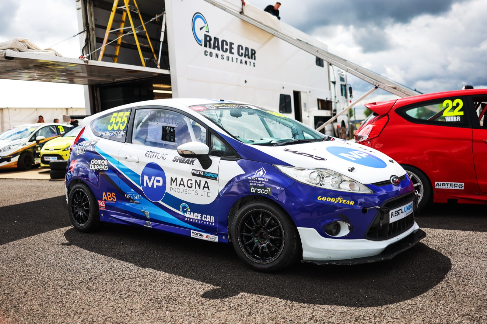
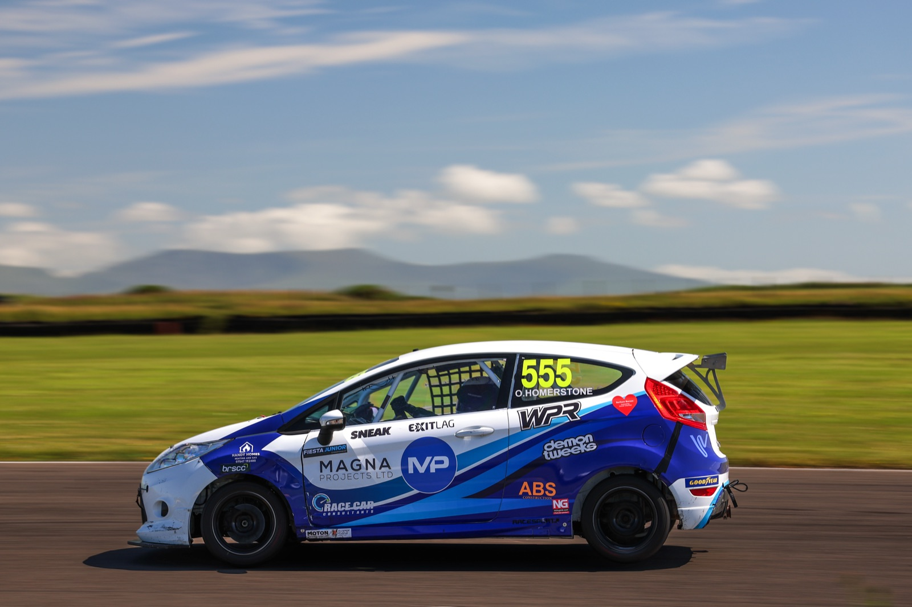
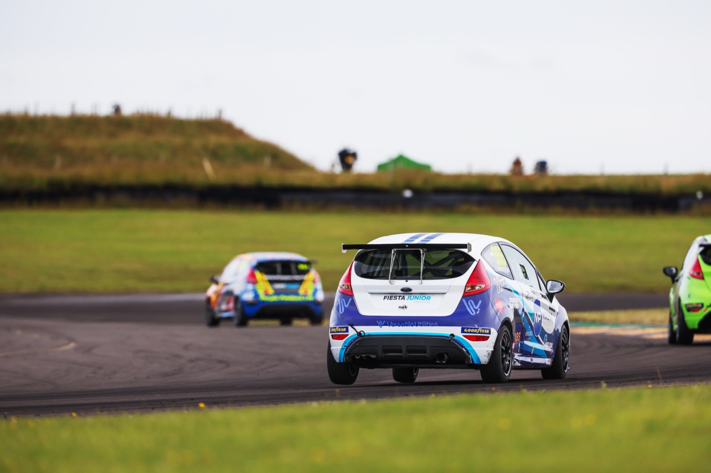
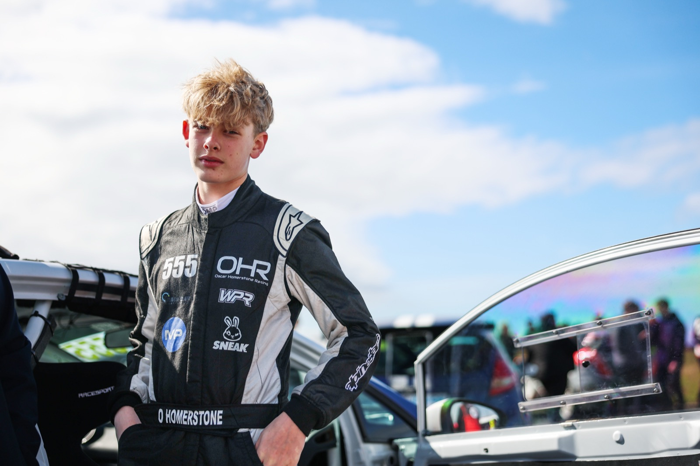

Keep scrolling to move around the Fiesta.




Oscar Homerstone is a 15-year-old British circuit racer competing in the BRSCC Fiesta Junior Championship — one of the UK's leading junior tin-top series, run in identical Mk7 Ford Fiesta 1.6 Zetec S cars for drivers aged 14–17.
Racing car #555 under his own banner, Oscar Homerstone Racing (OHR), Oscar races with Race Car Consultants at circuits across the UK including Silverstone and Anglesey.
Fiesta Junior is the first step on a clear path: Oscar's ambition is to progress into GB4 single-seaters and on to GT racing across Europe — and he's building the partnerships and racecraft to get there.
“Racing with Race Car Consultants in the BRSCC Fiesta Junior Championship. Ford Fiesta, car 555.”
Learning racecraft in the UK's toughest junior tin-top championship — car #555 with Race Car Consultants, racing at Silverstone, Anglesey and beyond.
The step into single-seaters: slicks, wings and open-wheel speed on the UK's premier circuits, building towards international competition.
Endurance and sprint GT machinery on the great European circuits — the long-term target for Oscar Homerstone Racing.